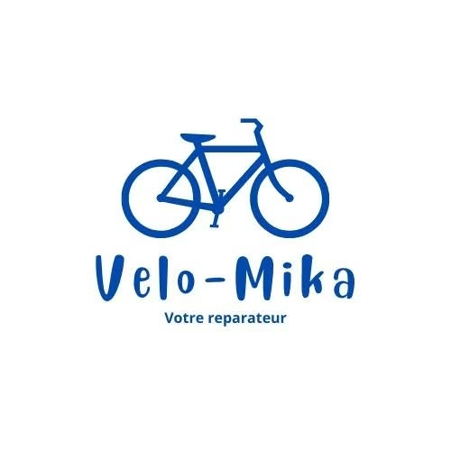

Votre réparateur vélo à domicile
Votre vélo réparé,
sans vous déplacer.
Moi, c’est Mika, mécanicien vélo basé à Bruges. Je me déplace à votre domicile ou sur votre lieu de travail pour entretenir et réparer votre vélo, à Bordeaux, Bruges et dans les communes voisines.
06 52 29 92 83Entretien & révision
Réglages, graissage et contrôle des points de sécurité.
Réparations courantes
Crevaisons, freins, transmission et roues.
Un souci avec votre vélo ?
Décrivez le problème pour préparer l’intervention.
Parlons de votre vélo.
Pour une demande de réparation ou un rendez-vous, contactez-moi par téléphone ou SMS en précisant votre commune et le problème rencontré.